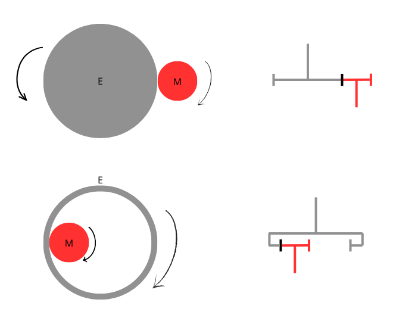
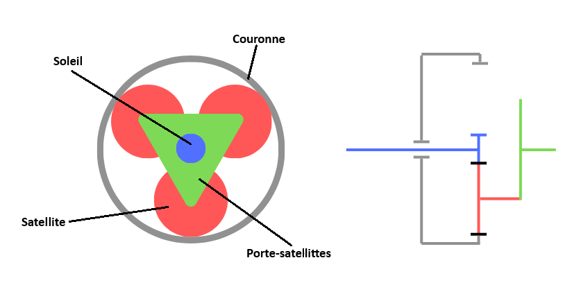
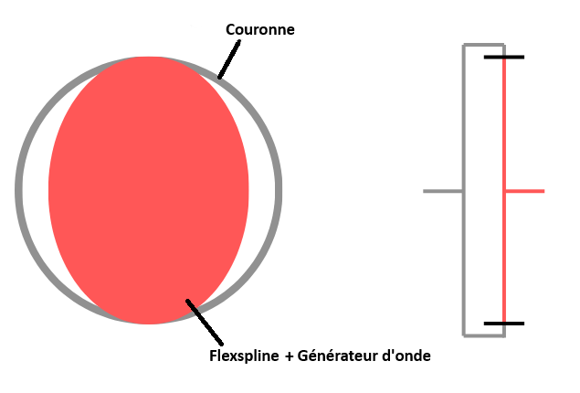
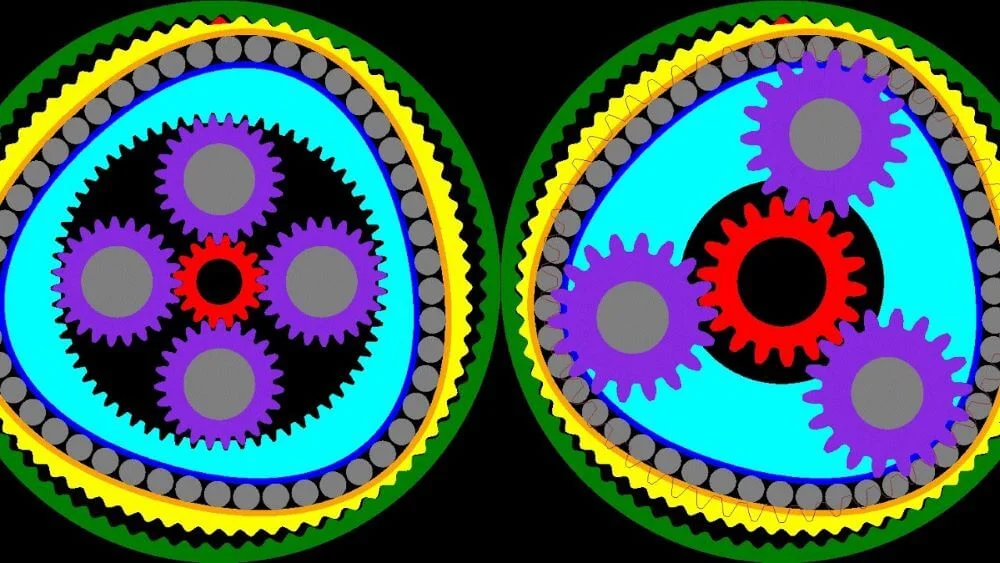
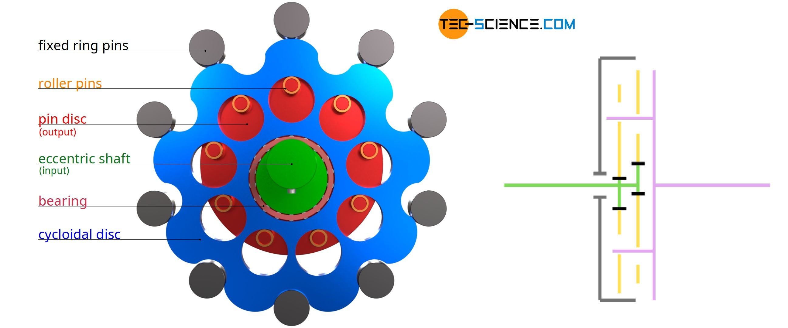
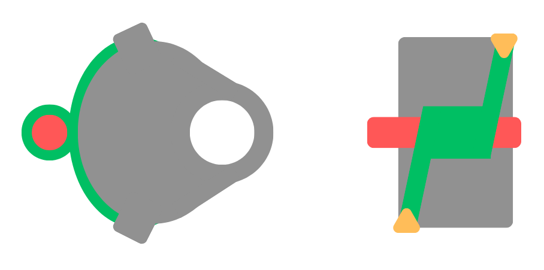
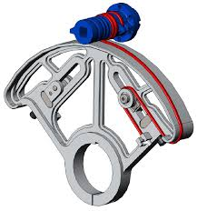

Les articulations robotiques
Les articulations d’un robot sont les liaisons mécaniques entre ses différentes parties, qui permettent le mouvement relatif des segments et rendent possible le positionnement de l’effecteur final dans l’espace.
Celles-ci ont un rôle crucial : elles transforment l’énergie mécanique transmise par les moteurs en un mouvement fluide. Pour réaliser cette transformation, plusieurs techniques sont utilisées, chacune présentant des avantages et des inconvénients. On regroupe ces technologie sous la terminaison de gearbox. Par la suite, je présenterai les différentes gearbox employées afin de mieux les appréhender.
Engrenage simple (Spur gearbox)
Entrainement par engranage externe et interne (M = moteur, E = escalve)
Les engrenages droits externes (spur externes) sont constitués de deux roues dentées dont les dents sont situées sur la face extérieure et qui engrènent l’une avec l’autre. Lorsque l’engrenage moteur entraîne l’engrenage mené, les deux roues tournent en sens opposés. Ce type d’engrenage est simple à concevoir, robuste et très utilisé pour la transmission de puissance.
Le rapport de réduction d’un engrenage externe dépend du nombre de dents de chaque roue. Il s’exprime par :
$$ r = \frac{\omega_{entrée}}{\omega_{sortie}} = \frac{Z_{mené}}{Z_{menant}} $$
où \( Z_{menant} \) est le nombre de dents de l’engrenage moteur, \( Z_{mené} \) celui de l’engrenage entraîné, et \( \omega \) la vitesse angulaire. Par ailleurs un rapport \( r > 1 \) correspond à une réduction de vitesse et à une augmentation du couple.

Les engrenages droits internes sont composés d’une roue dentée dont les dents sont situées sur la face intérieure, engrenant avec un pignon externe. Contrairement aux engrenages externes, les deux roues tournent dans le même sens. Cette configuration permet des ensembles plus compacts et des rapports de réduction élevés.
Cependant ce type de gearbox est peu utilisé dans le monde de la robotique car il est plus volumineux et pèse plus lourd que d'autre solution.
Néanmoins le rapport de réduction pour un engrenage interne s’écrit :
$$ r = \frac{\omega_{entrée}}{\omega_{sortie}} = \frac{Z_{couronne}}{Z_{couronne} - Z_{pignon}} $$
où \( Z_{couronne} \) est le nombre de dents de la roue interne et \( Z_{pignon} \) celui du pignon moteur.
En supposant une transmission idéale sans pertes, la puissance mécanique est conservée :
$$ P = C \cdot \omega = \text{constante} $$
Il en découle que le couple de sortie augmente proportionnellement au rapport de réduction :
$$ C_{sortie} = C_{entrée} \cdot r $$
Dans un système réel, il est nécessaire de prendre en compte le rendement \( \eta \), qui représente les pertes mécaniques dues aux frottements et aux déformations :
$$ C_{sortie} = C_{entrée} \cdot r \cdot \eta $$
Par la suite on va parler d'engrenages simple sans prendre compte de leurs potentiels complexités. Si vous voulez en apprendre plus je vous conseil le cours de A. Bhatia Vous pouvez le retrouver ici
Néanmoins, on peut noter que l'on utilise très souvent des engrenages hélicoidales pour pouvoir transmettre plus de couple.
Engranage planétaire (Planetory gearbox)
Entrainement par engranage planétaire
Les engrenages planétaires, également appelés engrenages épicycloïdaux, sont constitués de trois éléments principaux : le pignon solaire (soleil), la couronne (roue à denture interne) et un ou plusieurs satellites montés sur un porte-satellites. Cette architecture permet d’obtenir des rapports de réduction élevés dans un encombrement réduit, tout en répartissant efficacement les efforts mécaniques.
Le fonctionnement d’un engrenage planétaire dépend de l’élément entraîné, de l’élément bloqué et de l’élément utilisé comme sortie. Selon cette configuration, les vitesses de rotation et le sens de rotation peuvent varier.
La relation fondamentale reliant les vitesses angulaires s’écrit :
$$ \frac{\omega_s - \omega_p}{\omega_c - \omega_p} = - \frac{Z_c}{Z_s} $$
où \( \omega_s \), \( \omega_c \) et \( \omega_p \) représentent respectivement les vitesses angulaires du soleil, de la couronne et du porte-satellites, et \( Z_s \) et \( Z_c \) le nombre de dents du soleil et de la couronne.

Entrainement par engranage planétaire (Soleil moteurs & Porte-satellite sortie)
Dans la pratique, on rencontre fréquemment les configurations suivantes :
| Élément moteur | Élément bloqué | Sortie | Rapport de réduction \( r = \frac{\omega_{entrée}}{\omega_{sortie}} \) | Sens de rotation |
|---|---|---|---|---|
| Soleil | Couronne | Porte-satellites | \( r = 1 + \frac{Z_c}{Z_s} \) | Même sens |
| Couronne | Soleil | Porte-satellites | \( r = 1 + \frac{Z_s}{Z_c} \) | Même sens |
| Soleil | Porte-satellites | Couronne | \( r = - \frac{Z_c}{Z_s} \) | Opposé |
| Couronne | Porte-satellites | Soleil | \( r = - \frac{Z_s}{Z_c} \) | Opposé |
Grâce à leur polyvalence et à leur bon rapport couple/encombrement, les engrenages planétaires constituent une très bonne solution pour les réducteurs robotiques (en particulier si c'est couplé avec un moteur brushless puisque l'on peut entierement les rentrer à l'interieur). On en utilise en générale plusieurs etages à la suite des autres pour avoir un bon rapport de reduction.
Une video Youtube pour parfaire la compréhension : How Planetary Gears Work | 3D Printed Planetary Gearbox Design and Test
Une règle à rescpecter pour un bon fonctionnement de ce type de gearbox est que
- \( Z_c\) = \( Z_s\) + \( 2 * Z_{satellite}\)
- \( Z_{satellite}\) = \( Z_s\) + \(k\), avec \( k\) la constante jusqu'a ce que \(Z_{satellite}\) soit un nombre premier.
Engranage harmonique (harmonic gearbox)
Entrainement par engranage harmonique
Un engrenage harmonique est composé de trois éléments principaux : le générateur d’onde, le flexspline (roue flexible à denture externe) et la couronne (roue rigide à denture interne). Le générateur d’onde déforme le flexspline de manière elliptique, ce qui provoque un engrènement progressif des dents avec la couronne.
Le principe de fonctionnement repose sur une légère différence de nombre de dents entre le flexspline et la couronne. À chaque rotation du générateur d’onde, le flexspline se décale de quelques dents par rapport à la couronne, ce qui engendre une réduction de vitesse très importante.
On note \( Z_c\) = \( Z_{flex} + 2\)
Le rapport de réduction d’un engrenage harmonique s’exprime par :
$$ r = \frac{\omega_{entrée}}{\omega_{sortie}} = \frac{Z_c}{Z_c - Z_f} $$
où \( Z_c \) est le nombre de dents de la couronne rigide, \( Z_f \) le nombre de dents du flexspline, \( \omega_{entrée} \) la vitesse angulaire du générateur d’onde, et \( \omega_{sortie} \) celle du flexspline.

Entrainement par engranage harmonique
Dans la configuration la plus courante, la couronne est fixe, le générateur d’onde est moteur et le flexspline constitue la sortie. Cette configuration permet d’obtenir des rapports de réduction typiquement compris entre 30:1 et 160:1 en un seul étage. Cette qualité en plus de leur faible jeu (quasi nul), leur compacité et leur excellente répétabilité en font un très bon choix pour des articulations robotiques.
Une video Youtube pour parfaire la compréhension : What is Strain Wave Gear a.k.a. Harmonic Drive? A Perfect Gear Set For Robotics Applications!?
Le rayon du générateur d’onde est dimensionné en fonction du module du flexspline afin de garantir une déformation adéquate et un engrènement efficace des dents.
La variation du rayon du générateur d’onde correspond approximativement au module du flexspline (± m), ce qui implique que le diamètre effectif maximal du générateur d’onde coïncide avec le cercle primitif externe du flexspline, garantissant ainsi un engrènement correct des dents lors de la déformation.
Cumule Harmonique et Planétaire
Exemple d'entrainement par cumule d'engranage harmonique & planétaire
On peut cumuler les bienfaits d'une gearbox ahrmonique et planétaire. Une articulation combinant les deux permet d’obtenir un rapport de réduction élevé, un couple important et un jeu quasi nul, au prix d’une complexité mécanique et d’un rendement global légèrement réduits.
Engranage cycloidal (cycloidal gearbox)
Entrainement par engranage harmonique
Le principe repose sur un mécanisme cycloïdal où un disque excentrique ou un cam entraîne deux ou plus disque cycloidale (au plus meilleur est la répartition des forces) qui vont eux-même entrainer des rouleaux disposés autour d’un axe. Cette configuration permet une répartition uniforme des forces et un excellent rendement mécanique.
Le rapport de réduction d’un réducteur cycloïdal s’exprime par :
$$ r = \frac{\omega_{entrée}}{\omega_{sortie}} = \frac{N - n}{n} $$
où \( N \) est le nombre de dents de l’anneau extérieur, \( n \) le nombre de lobes du disque cycloïdal.

Entrainement par engranage harmonique
La configuration la plus courante fixe l’anneau extérieur, l’entrée est assurée par le disque excentrique et la sortie est l’arbre relié aux rouleaux. Cette configuration permet d’obtenir des rapports de réduction typiquement compris entre 10:1 et 100:1 en un seul étage. Les grandes qulité de ces articulations sont la possibilité de transmettre un couple très élevé pour une très grande durée de vie et resistance.
Une video Youtube pour parfaire la compréhension : What is Cycloidal Drive? Designing, 3D Printing and Testing
Entrainement par cabestan (capstan drive)
Entrainement par engranage harmonique
Un entraînement par cabestan est un système de transmission utilisant un câble, une corde ou une courroie enroulée autour d’un tambour ou d’une poulie. Il permet de transmettre un mouvement rotatif ou linéaire avec un rapport de réduction contrôlable par le diamètre du tambour et le nombre de spires.
Le principe repose sur la friction entre le câble et le tambour. Lorsque le tambour tourne, le câble enroulé transmet le mouvement à l’arbre de sortie ou à une charge linéaire.
Le rapport de réduction peut s’exprimer par :
$$ r = \frac{\omega_{entrée}}{\omega_{sortie}} = - \frac{D_{tambour}}{D_{roue\_menée}} $$
où \( D_{tambour} \) est le diamètre du tambour moteur, \( D_{roue\_menée} \) le diamètre de la poulie entraînée, et \( \omega \) la vitesse angulaire correspondante. Dans le cas d’un déplacement linéaire, la vitesse de sortie est proportionnelle à la vitesse périphérique du tambour.
Dans la pratique, un entraînement par cabestan est souvent associé avec un moteur brushless à rotor externe qui allie un couple important pour un vitesse assez lente de base.
Entrainement par engranage harmonique
On utilise ce type d'entrainement surtout pour les robots des articulations nécéssitant peu de range de mouvement, typiquement des robot mobile (pour les jambes).
Un point sensible est de trouver un cable avec un facteur d'étirement et d'usure assez faible pour les applications longues durées.
Une video Youtube pour parfaire la compréhension : High Precision Speed Reducer Using Rope